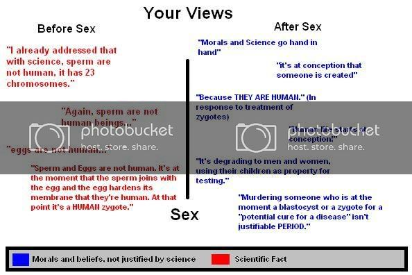

To “be” an individual you need to have the capacity for subjective “being.”
To repeat what I said before, most literate people agree that a “brain” is required for subjective experience. “Blastocysts” do not have the capacity for subjective experience, therefore it’s fallacious to refer to them as “individuals.” Again, “who” are we talking about when we say collections of cells are “individuals?” There is nobody there.
Furthermore, when you decide to split hairs over the difference between “blastocysts” and “stem cells,” here’s a primer on what you’re talking about, from wikipedia:
==========
The blastocyst consists of two primary cell types:
* the inner cell mass, also known as the "embryoblast"
* the trophoblast, a layer of cells surrounding the inner cell mass
and the blastocyst cavity (blastocoele)
The former is the source of embryonic stem cells and gives rise to all later structures of the adult organism. The latter combines with the maternal endometrium to form the placenta in eutherian mammals…
When you’re talking about the cells that later develop into a human, you’re referring not to the entire blastocyst, but specifically the “inner cell mass” which is the source of stem cells.
I never said it didn’t, I suggest you read my posts more carefully before responding.
Yeah, I don’t think you’re understanding what I’m saying Brothershrike
and the way you’ve formatted your post makes it difficult to reply to, but I’ll try to clarify for you.
“so your saying because it’s religious, it’s bad? hmmm…”
Not only is this not what I’m saying, I can’t imagine how you interpreted my post to mean this. What I said is that the fundamentalist position that stem cell research is cruel to “people” ignores the cruelty to the sick and dying that banning said research implies. Its not bad because its “religious,” its bad because it ignores human suffering.
If I’m understanding what you’re saying properly (a little stressed and tired here), then you’re conveniently ignoring the fact that religious people aren’t necessarily creationists/ignorant people/ people who don’t believe in modern science…
Again, you clearly aren’t understanding what I’m saying. I never implied religious people are ignorant, I am stating the fact that religion and faith itself doesn’t rest on logic in the same way that philosophy does. Example - the bible is infallible, the “word of God” and so on, not because of logical argument but because thats what Christian tradition declares to be the case. Christianity IS a philosophy, it just isn’t open for debate in the same way other philosophies are.
Let’s agree to disagree on this one, there’s an enormous amount of debate in and around Christianity, especially with regard to the value and meaning of the Bible, but that’s not really the point of the thread
Unfortunately, many of us seem to think this.
I don’t, Because I see the bible for what it is- a historical record of events and stories as interpreted by early civilization.
There are only a few parts that are actually the words of God, and we don’t even know for sure that those parts are true history, or just stories to teach morals.
There’s nothing wrong with gays, there’s nothing wrong with science, and who is to say that God didn’t set the universe in motion and let the forces that science tell us created the universe and out world take over from there?
Also, donate your child’s umbilical for stem cell research! It hurts nobody on either end of the argument, and it helps medical science!
Cup o Joe, you’re really starting to get on my nerves. Read the rebuttals to your statements before you reply and for god’s sake, don’t go changing your argument half way through a discussion.
I’m not going to highlight all the bullcrap in your posts as other people have already done that admirably well, but I am just going to ask that you show me which post it was exactly that responded to mine, because I ain’t seen 'em.
Ok fine guys, theres a healthy intellectual debate AROUND THE INTERPRETATION OF the Bible - which further supports my point that religion and philosophy are basically similar - but lets get back to the actual point of this discussion, which is to pwn Cupojoe’s lack of logic in every orifice.
There were no morals involved in the Cold War stand off, it was purely a military decision. Neither side could attack without assuring the destruction of themselves. Making a larger bomb would have just escalated the problem, so they just settled down and worked on gaining support from all the other nations in the world to have a battle of ideologies. Strategy and tactics, not science and morals.
I would say that it is, and I don’t consider myself sick. Technically any child that gestates in a womb is a form of parasite, in fact scientists are often baffled as to how the immune system knows that a developing fetus is not some kind of pathogen and doesn’t attack it.
Why not? Humans need to stop placing themselves on such a high pedastal, we’re not the best species. Religion only enforces this belief, and blinds us to the fact that we’re just another group of animals who’ve been wandering around for a million years, absolutely nothing in comparison with creatures such as crocodiles who have been around since dinosaur times.
What’s wrong with a materialistic view, and why would it result in copypasting?
Lies, if someone broke open a 5 day egg they’d say “Ah shit, there’s something in here!” and then chuck it in the bin. No matter what you think animal rights are still far below human ones.
Do you realise how dangerous it would be to perform a C-Section on a sick woman? It’s dangerous enough if she’s fit and healthy. Realistically it is far better to save the woman who has the potential to have another child then to save the baby who may die anyway.
Perhaps you mean “conciousness?” If so I would say that is a huge deciding factor in what constitutes as a functional human.
I’ll just try to focus on a single quote (the personal attack one) and move out from there, after all it is just the same garbage over and over again, regardless to the variation in content to which you are replying. By the way, cookie cutter responses are indicative of either not fully thinking something through or having a shallow, baseless argument rooted in a lack of rationality.
Interesting, you’re actually trying to compare a liberal perspective to a heavily conservative one and you fail miserably. What a surprise. If you want to make a comparison, at least try to use the same school of thought for both. Oh, by the way, you’re an asshole for trying to pull that crap. It’s just another example of your immature, irrational nature.
So, your last stand is on the 13 chromosome issue. I think the first thing we should do here is outline the fundamental aspects of your argument.
All human life is sacred.
Fetuses are human because they retain consciousness.
Embryos are beings because they are human
Sperm are not human because they don’t have 13 chromosomes.
Woah, woah, woah, hold on a second. Let’s go through that list again. Moral belief with no grounds in science, moral belief with no grounds in science, moral belief based on an extension of previous belief, moral…no wait! I spy a scientific fact! Alright, so I guess this can make sense, this just means that your beliefs coincide with facts. But wait, science can specifically prove that embryos in fact do not retain any semblance of self awareness or consciousness. Well darn, it looks like you’re just pulling shit out of your ass in a pathetic attempt to save your baseless argument. Here, let me make it a little more visual for you.

This is very interesting, it appears that you hold sex (or “conception” as you so valiantly put it with your morals), as the ultimate separator between science and morals. Now, this is interesting on 2 levels.
First, you believe science and morals are similar and more often than not blended into one (something I strongly disagree with but can be debated at a later point) yet you keep these two things so separate in this argument. This goes against a fundamental belief of yours, I am a bit confused.
Second, why is sex such a defining factor. Sure, everything changes after sex, but why does sex magically make all science disappear? Is science no longer relevant after having sex? Is that why so many scientists are virgins? Are you implying that by having sex we forsake all rationality for want of a greater thing? If so why do so many religions keep us so long from sex? Wouldn’t they want us to forsake science sooner by having sex so we could all move into this morally enlightened world in which you exist?
Oops, I failed with my single quote policy, but I was just curious. Do women get impregnated by sheep sperm or something, because as far as I know they’re called HUMAN sperm.
Morals are a universal truth and a universal need to be hand in hand with science which is latin for knowledge. If there were no morals the world would be in anarchy and you know it.
What exactly makes you think science disappears when a person is created at conception? Seriously go read a book. You’re getting too emotional and sarcastic to make a concise statement.
Marriage is a life long commitment and for a family to be correct there must be a mother and a father who will teach their children how to act. You don’t go create a child and just wing it. That’s irresponsible.
Again you’re discriminating against someone’s age. You can whine all you want about not wanting to submit to universal Truths it won’t change the irrefutable fact that human life starts at conception.
Seriously there’s no point in continuing, we’re going in circles. I will NEVER dumb down the truth about the start of human life to be accepted and many of you are so complacent towards this subject that you won’t even try to learn about it.
Morals most certainly are not universal. Some tribes in Africa used to eat their dead and didn’t consider it immoral. Azteks (or some other native American culture, whatever), and many other cultures used to sacrifice people to their gods and didn’t consider it immoral.
There are plenty examples of morals differing between cultures.
Considering your own morals universal is quite close-minded, and it’s discriminating against others, which you clearly oppose.
:facepalm:
He was pointing out that in your arguments science seemed to disappear after sex.
That’s pretty unrealistic. I bet more children are born out of wedlock than otherwise. And there are plenty of children born with only one parent, or none, even.
People have said in this thread that the point at which an embryo or zygote even becomes “someone” is debatable, but you just seem to ignore those points.
Again, just because you consider something true, doesn’t mean it’s a universal truth.
Mainly because you keep bringing up the same arguments that keep getting refuted over and over.
I appreciate I’m late to the party, but I’d like to inject a note of reason and experience here, being as I am a father of two and therefore know a bit from a personal and “technical” perspective.
Whilst it’s absolutely true that a foetus has a functioning brain and heart from about 6-8 weeks (indeed, it is this time that an embryo becomes a foetus), the foetus is only considered “viable” (that is, able to live, maybe with intensive life-support, outside of the mother’s womb) from 18-20 weeks. In the UK, terminations (or “murders” as Cup o Joe would have them) only really occur after this date when there is significant risk to the mother if the pregnancy continues AND the chances of foetal survival in a post-natal environment are minimal (i.e. do nothing = mother & baby die, do something = mother lives, baby likely dies; this isn’t murder, it’s triage, and to call it murder is irresponsible and highly emotive). Often, the foetus is delivered and placed on life-support anyway, where possible, as medical science is getting ever better at supporting very small babies. While pre-term post-natal survival rates are improving, it’s still a VERY dicey proposition.
Aaaanyhow, is a 6 week old foetus human? Unless your partner’s been indulging in some exciting carnal relationships, of course it is. Will it definitely become a human being? Maybe.
Now don’t get me wrong that’s no excuse to terminate pregnancies just for shits & giggles, but an awful lot has to happen, and happen correctly, between 6 weeks and 13 weeks (the end of the 1st trimester, or thereabouts) before you can start to allow yourself to believe that you’re going to have a child. As much has to happen between 13 weeks and 26 weeks (the end of the 2nd trimester) before the foetus has ANY chance of surviving outside the womb AT ALL.
In honesty bacon, this is a bit of a facecious argument whilst there may not be much functional difference between a newborn human and a newborn dog, for instance, would you actually move to kill either of them for science? As an additional thought, a 2 week old puppy is significantly further advanced than a 2 month old baby in almost all respects, being able to feed itself, walk, communicate desire with parent and so on. Doesn’t that lessen the baby’s significance by your argument? (just being controversial for the sake of it, you can ignore me!!)
some of us know what we’re talking about though! haha!
That’s what happens when you leave things up to evolution to sort it out!
Actually, since you seem to appreciate pedantry, half your genes came from your paternal grandparents and the other half came from your maternal grandparents, but nevermind!
I would personally correct you there, at conception a HUMAN is created, only once that human survives matriculation can they start to become SOMEONE.
The argument isn’t irrelevant, but it is a moral/ethical one, rather than a practical/technical one; sure the embryos are only used in research, but they are potential human beings. Of course, the whole umbilical cord thing renders this entirely moot, so I’ll stop right there
Cup o Joe, I agree with you, but only to a point. The reason why PETA are all over people who eat 5-day fertilised eggs is because they have already shown significant signs of development - a 5 day fertilised egg would be equivalent to a 10 week old foetus. Equally a 5 day embryo is roughly equivalent to a chicken’s egg 9 hours after insemination… You’d probably have to don rubber gloves to get at it.:fffuuu:
True, but not all blastocysts become human, a fair few are flushed out in what is mistaken for a heavy period… does that make the mother a murderer?
I’m going to try very hard to resist calling you an asshat (oh well, failed on that already) but there are some very large problems with your assertions here:
It’s the HIPPOCRATIC oath, not the hypocritical one. :facepalm:
Calling doctors “abortionist murderers” when, under duress, they take a triage decision to save the mother is highly emotive ballsackery of the most disingenuous kind.
IF you were in the operating theatre and IF you have any formal medical training AT ALL you might have some grounds for taking that stance. As it stands, you weren’t there and you have no idea of the viability (or otherwise) of the baby.
My father was a doctor (now retired) and he (and indeed, the whole of the rest of the medical profession) always takes the view that you save the mother first and do what you can for the baby. If the baby dies, well (to put it bluntly) the mother can always try again. Of course it’s tragic, ANY death is tragic. However, if the baby’s causing severe trauma to the mother, the chances of EITHER of them surviving drop dramatically.
Caesarian sections are not to be lightly undertaken (I know, because my wife’s had two emergency C-Sections). ANY surgery that enters the body cavity is deemed major surgery. To administer a C-Section with a local anaesthetic, you also have to administer an epidural, followed by an anaesthetic block. This takes a certain amount of time (anywhere up to 15 minutes) to kick in, during which time the mother and the baby may be dead. Administering a GA takes less time, but is more likely to adversely affect the baby - especially as they’re probably already in severe distress - however it can stabilise the mother’s condition.
From a pure triage point of view there is no argument, you prioritise the mother as she is already a “viable” human being who is capable of returning to full ability in a short space of time. Prioritising the baby, who may need very high levels of specialised care for the rest of their (possibly short) life, will definitely jeopardise the mother and will probably be unsuccessful in its own aim too.
Is it murder to prioritise someone who will survive as a result of your intervention, over someone who may not survive even with your intervention? Surely it would likely be double murder to prioritise the more uncertain case?
Founded in 2004, Leakfree.org became one of the first online communities dedicated to Valve’s Source engine development. It is more famously known for the formation of Black Mesa: Source under the 'Leakfree Modification Team' handle in September 2004.